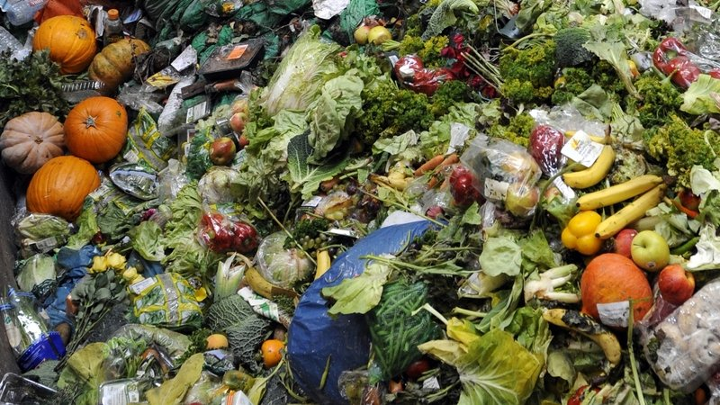

What Exactly is Food Waste
USDA’s Economic Research Service (ERS)
defines food loss as the edible amount of food,
postharvest, that is available for human consumption
but is not consumed for any reason. It includes cooking
loss and natural shrinkage (for example, moisture loss); loss
from mold, pests, or inadequate climate control; and food waste.
( link )
"Ugly" Foods
While the world wastes about 1.4 billion
tons of food every year, the United States
discards more food than any other country in
the world: nearly 40 million tons — 80 billion
pounds — every year. That’s estimated to be 30-40
percent of the entire US food supply, and equates to
219 pounds of waste per person.5 That’s like every person
in America throwing more than 650 averagesized apples right
into the garbage
